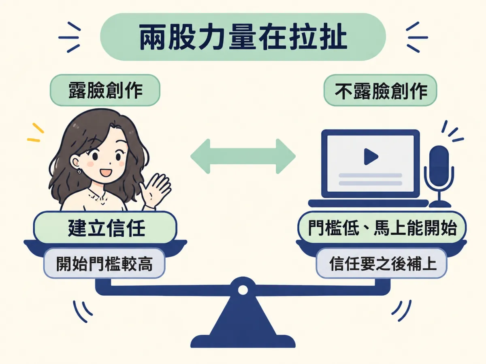
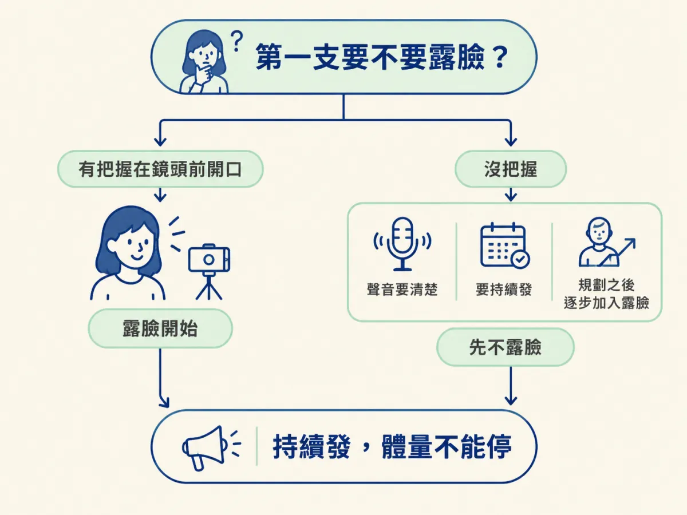

面對「第一支要不要露臉」的選擇，你能比較兩種開始方式的取捨，用判別問題做出決定，並規劃之後從不露臉過渡到露臉的方式。
上一步說，聲音是底線，畫面不必講究。這時很多人會遇到另一個問題：我要不要出現在鏡頭前？對著鏡頭講話會讓人緊張，不露臉又擔心觀眾不認得你，這個念頭常常讓人一直拖著，遲遲不發第一支。
這一節處理的就是這個兩難。它不是要你二選一之後就不能改，而是讓你知道每一種開始方式會帶來什麼，然後挑一個眼前能做到的。
課程給出的建議很明確：如果你有把握，就露臉開始。原因是露臉比較能建立信任，觀眾看得到你，才會慢慢相信你講的東西。
但課程也說得很清楚，不露臉完全可以。Jay 自己一開始就沒有露臉，他沒有好的相機，只有一支舊手機，就對著電腦螢幕講他覺得有用的 AI 主題。課程也提到，就算一開始不露臉，之後也可以隨時過渡到露臉的內容，這是你隨著事業成長自己決定的轉換。
所以露臉和不露臉，拉扯的其實是兩件事：露臉有助於信任，但會抬高開始的門檻；不露臉降低門檻，但之後要想辦法補上信任。

| 比較項目 | 一開始露臉 | 一開始不露臉 |
|---|---|---|
| 開始的門檻 | 要有在鏡頭前開口的把握 | 不必出現在鏡頭前，用螢幕與聲音就能開始 |
| 信任的來源 | 觀眾直接看到你，比較容易建立信任 | 主要靠內容的實用性撐起來，之後再逐步補上信任 |
| 需要留意的地方 | 別因為緊張而一支都發不出去 | 仍要讓聲音清楚，並持續發，同時規劃之後的過渡 |
| 之後的轉換 | 不需要特別轉換 | 可以依照自己的成長，逐步加入露臉的內容 |
這張表想說的重點是：不露臉開始的代價，是信任要等到之後才慢慢補上；露臉開始的代價，則是一開始的心理門檻比較高。兩種方式都有成立的理由，差別在於你現在能負擔哪一種代價。
你可以用下面三個問題來判斷，每個問題都能立刻回答。
這個規則不是永遠成立，有兩種情況會翻轉。
第一種，你其實有勇氣露臉，卻因為習慣而一直躲在螢幕後面。這時候，課程特別推薦的信任建立機會就白白放掉了，你應該試著露臉開始。
第二種，「還沒準備好露臉」變成拖延的藉口，一支都不發。這樣的選擇就違背了這一週的目標，因為這一週要的是發出去，而不是等到完美的形象才開始。遇到這種情況，就應該先用不露臉的方式發出第一支。
有把握就露臉開始；沒把握就先不露臉，但聲音要清楚，要持續發，並規劃之後逐步加入露臉的內容。不管選哪一種，體量都不能停下來。

第一支影片要不要露臉，取決於你有沒有把握在鏡頭前開口。露臉有利於建立信任，但會抬高門檻；不露臉降低門檻，但之後要規劃如何補上信任。兩種方式都可以，關鍵是不要讓「露臉」的顧慮一直擋住發文。